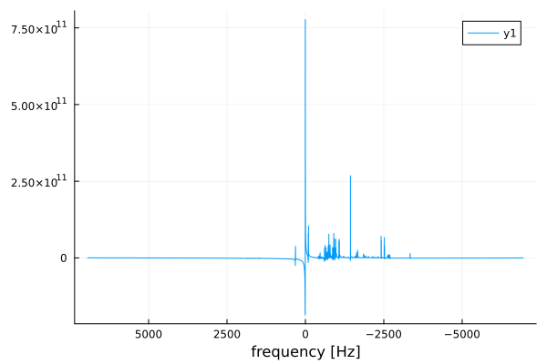
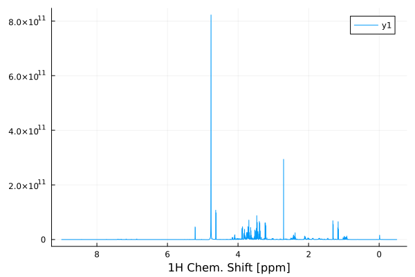

User Manual
Getting started
NMR.jl is a Julia package. It is installed using the Julia package management system:
import Pkg
Pkg.add(url="https://github.com/marcel-utz/NMR.jl")Once the install finishes, you are ready to go.
Loading NMR Data
To start processing, you need to load some NMR data. There are commands to load raw data from various spectrometer vendors. Typically, the data is loaded raw. This means that only the time-domain spectral data is returned, and you have to manually convert it to a data object that can be further processed.
Here is an example:
import NMR
f=NMR.readBrukerFID("../../test/data/10/fid")32768-element Vector{ComplexF64}:
3676.8359375 - 5472.7578125im
-11968.375 + 27875.5546875im
15609.0859375 - 9893.796875im
-15682.2578125 + 39816.0546875im
33125.0390625 - 43448.921875im
-39115.0625 + 68474.375im
58771.6796875 - 87289.2109375im
-73760.15625 + 122312.8203125im
103695.46875 - 158472.9296875im
-129576.25 + 203457.8046875im
⋮
-2.7019769578125e7 - 1.1946442921875e7im
-3.02714276171875e7 + 1.281115409375e7im
-1.5218733953125e7 + 3.430162490625e7im
8.7481928203125e6 + 3.86090874296875e7im
0.0 + 0.0im
0.0 + 0.0im
0.0 + 0.0im
0.0 + 0.0im
0.0 + 0.0imfreturns an array with the complex data points contained in the fid file. To convert this to useable time-domain data, you need to convert it into a Data1D object.
Bruker NMR systems store the acquisition parameters in a separate file, which we can read into a Julia dictionary as follows:
acqus=NMR.readBrukerParameterFile("../../test/data/10/acqus")Dict{String, Any} with 235 entries:
"O4" => 4323.3
"PCPD" => [0, 80, 0, 0, 0, 0, 0, 0, 0, 0]
"PLWMAX" => Real[137.28, 0, 0, 0, 0, 0, 0, 0]
"PQSCALE" => 1
"TE" => 298.0
"FQ5LIST" => "<>"
"RECPRE" => [-1, 0, -1, -1, -1, -1, -1, -1, -1, -1 … -1, -1, -1, -1, -1, …
"VPLIST" => "<>"
"VCLIST" => "<>"
"O7" => 4323.3
"FL3" => 0
"FQ6LIST" => "<>"
"SW_h" => 13888.9
"DATATYPE" => "Parameter Values"
"RSEL" => [0, 1, 0, 0, 0, 0, 0, 0, 0, 0 … 0, 0, 0, 0, 0, 0, 0, 0, 0, 0]
"CNST" => [1, 1, 1, 1, 1, 1, 1, 1, 1, 1 … 1, 1, 1, 1, 1, 1, 1, 1, 1, 1]
"USERA4" => "<>"
"YMAX_a" => 1.54142e10
"SPOFFS" => [0, 0, 0, 0, 0, 0, 0, 0, 0, 0 … 0, 0, 0, 0, 0, 0, 0, 0, 0, 0]
⋮ => ⋮To convert the raw fid data into a Data1D object which we can process, we need some of these parameters. The time step between subsequent points in the FID is given by the inverse of the spectral width. Moreover, Bruker FIDs actually begin before $t=0$. We have to remove these points:
dwellTime=1/acqus["SW_h"]
f=f[74:end]
d=NMR.Data1D(f,0.0,length(f)*dwellTime)
NMR.plot(real(d))
To convert the time-domain data into a spectrum, we use NMR.FourierTransform. By default, FourierTransform interprets the time domain in the Data1D object in seconds, and produces another Data1D object with a horizontal axis in Hz:
import Plots
spect=NMR.FourierTransform(d)
Plots.plot(real(spect),xaxis=:flip,xlabel="frequency [Hz]")
To obtain a spectrum with a horizontal axis in ppm chemical shift, we have to indicate the conversion. This is done by giving the number of Hz per ppm as a parameter. In our case, the spectrum was acquired on a 700 MHz spectrometer. One ppm therefore corresponds to 700 Hz. The precise factor is contained in the Bruker parameter "SFO1". Also, we can calibrate the horizontal axis by indicating the chemical shift at the centre of the spectrum:
import Plots
spect=NMR.FourierTransform(d,PPM=acqus["SFO1"],CTR=4.76)
Plots.plot(real(spect),xaxis=:flip,xlabel="1H Chem. Shift [ppm]")
Phase Correction
The above spectrum still shows artefacts. To clean it up, we need to correct the phase. This can either be done manually, by supplying PH0and PH1 arguments to FourierTransform, or we can resort to automatic phase correction:
spect = NMR.AutoPhaseCorrectChen(spect)
Plots.plot(real(spect),xaxis=:flip,xlabel="1H Chem. Shift [ppm]")
Cutting Regions
The above spectrum covers a wide range without any signals, which is of no interest. We can chop out the central, important part:
s2=NMR.cut(spect,-0.5,7.0)
Plots.plot(real(s2),xaxis=:flip,xlabel="1H Chem. Shift [ppm]")
Computing Integrals
In Chemistry, it is customary to show the integral of the spectral signal along with the spectrum. This makes the intensity of the peaks directly visible as a step height for each signal. The integrated spectrum can be computed like this:
intSpect = NMR.integrate(s2)
Plots.plot(real(s2),xaxis=:flip,xlabel="1H Chem. Shift [ppm]",label="spectrum")
Plots.plot!(20*intSpect,label="integral")